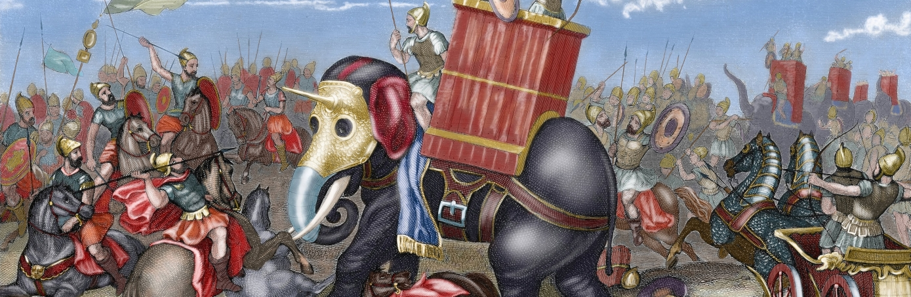

History
Pre-History
One of the many characteristics of the early history of Spain is the different sorts of people who spread all over the Peninsula. There is evidence of human habitation in Northern Spain that go back some 800,000 years. There are signs that modern man made his appearance around 35,000 BC. Many different cultures settled there, the Iberians sometimes around 4000 BC from the east and The Celts later. Spain began to flourish as early as the Bronze age where, in the south, the Tartessian civilisation began to inhabit modern day Seville around 750 BC.
The Roman Empire
Phoenician seafarers from present day Lebanon set up colonies in Cadiz and elsewhere on the east coast of Spain which were primarily used for trading around 1100 BC. As Phoenicia fell, the Iberian peninsula came under the rule of Carthage, modern day Tunis. The greeks also traded a huge amount in Nothern Spain. After Rome declared war on Carthage, defeating them in what is now known as the Punic Wars, Spain became under control of Rome, who held control of Spain for many centuries, laying the foundations for Spanish Culture and Language.
Middle Ages

After the fall of the western Roman empire in the fifth century AD, Spain was ruled by a Germanic people who had migrated all the way from central Europe. They were known as the Visigoths and they were also known for bringing down Rome.In 711, the Moors from modern day Morocco, crossed the Strait of Gibraltar, invading and occupying most of the peninsula with a couple of years. Their presence lasted more than seven centuries, though as generations pasted the Christian kingdoms to the north's power increased as christianity spread across Europe, this gradually drove the Moors southwards until in 1492 Granada, the last Moorish kingdom, was conquered by the Christian templars.
Early Modern
The Age of Discovery would change Spanish history forever as Christopher Columbus, under the flag of Spain, discovered the new world. Spain, due to it's increase in wealth, became a superpower of the world. The once divided kingdom was now a prosperous empire that rivalled and surpassed most Europe countries. But with the increase in wealth and power came the threat of foreign invasion. During this time much of Spains new found resources were drained due to fighting with other European countries as each of them tried to one up eachother in their expansion into the New World. With the accession of the Bourbon dynasty from the Habsburgs, Spain feel under the influence of the French for almost 100 years, until the defeat of Napolean during the Peninsular War.
Civil-war
During the 19th century, Spain was divided between liberals and conservatives, rural and urban society. Coups were frequent and there were no stable governments so there were many changes. With the working class gaining increased momentum and power, king Alfonso XIII was forced to abdicate in 1931 and Spain for the first time was declared a Republic. The conservative reaction from the church and army started the Spanish Civil War, which raged from 1936 to 1939. This was a fight between the Republicans of the east led by the anarchists of CNT/FAI and the Nationalists of the west led by Francisco Franco. The war terrorized Spain and led to the death of almost 1 million Spaniards. In the end the republicans were defeated and Franco became dictator of Spain. Spain didnt offically join the Axis during WW2 but supplied them with material and military support, as Germany had done the same for Franco during the Civil War and the two countries held similar ideologies. When Franco died in 1975, King Juan Carlos I took over Spain, leading it toward democracy. The country celebrated a cultural renaissance from the 1980's to late 1990's to celebrate it's new freedoms. Spain even hosted the Summer Olympics in Barcelona in 1992.